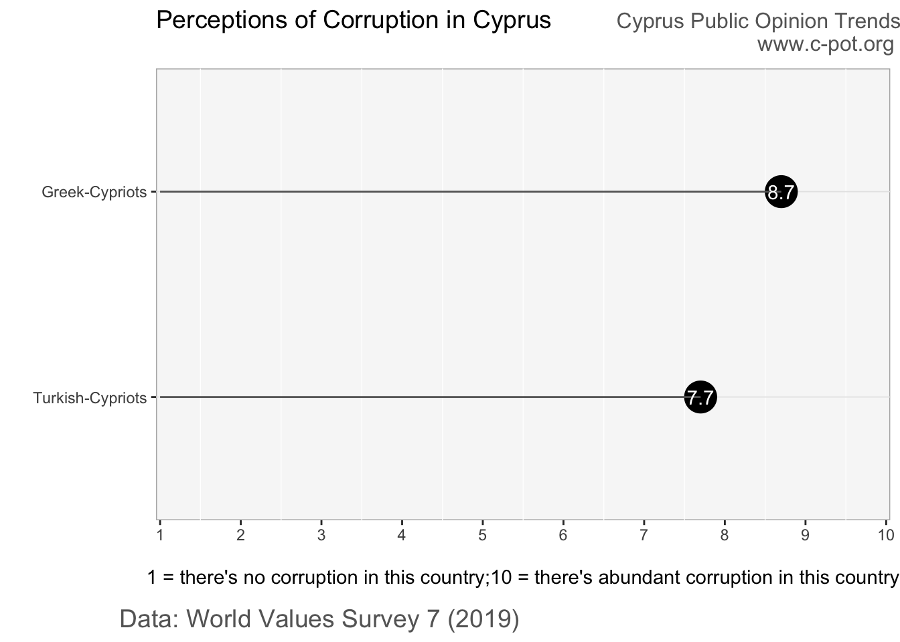
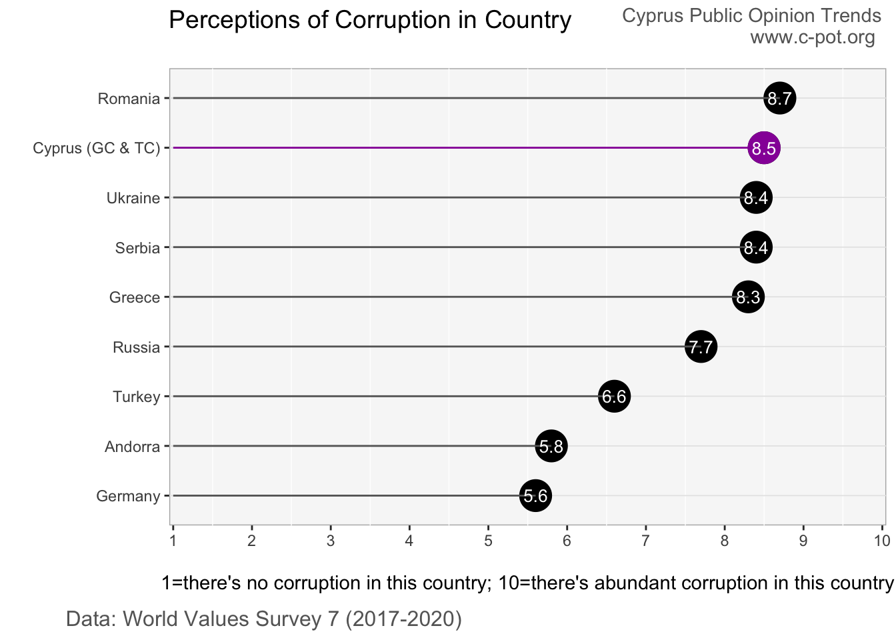

Corruption and conflict of interest among government officials is at the forefront of public discourse in Cyprus due to recent scandals. This post examines Cypriots’ perceptions towards public sector corruption and accountability.
• The vast majority of Cypriots feel that corruption among the civil service, state officials, and business executives is pervasive. Greek-Cypriots in particular overwhelmingly express that corruption is prevalent.
• Those that identify with the political ‘left’ report slightly higher levels of corruption than others.
• At the same time, even though Cypriots believe corruption is pervasive, their views towards the possibility of the corrupt being held accountable are a little more optimistic.
• These views likely fuel the general mistrust Cypriots have of political institutions, as Cypriots tend to be among the least trusting in the EU, indicating that political leaders have a lot of work to do if they wish to regain peoples’ confidence and meaningfully engage with them.
Αντιλήψεις Σχετικά με τη Διαφθορά και την Λογοδοσία στο Δημόσιο Τομέα
Η διαφθορά και η σύγκρουση συμφερόντων μεταξύ των κυβερνητικών αξιωματούχων βρίσκεται στο επίκεντρο της δημόσιας συζήτησης στην Κύπρο λόγω πρόσφατων σκανδάλων. Αυτή η ανάρτηση εξετάζει τις αντιλήψεις των Κυπρίων γύρω από τη διαφθορά και λογοδοσία στο δημόσιο τομέα.
• Η Κύπριοι κατά συντριπτική πλειοψηφία, και ειδικότερα οι Ελληνοκύπριοι, πιστεύουν ότι η διαφθορά μεταξύ των δημοσίων υπαλλήλων, κρατικών αξιωματούχων και στελέχη επιχειρήσεων είναι διαδεδομένη.
• Αυτοί που ταυτίζονται με τις αντιλήψεις της «αριστεράς» δηλώνουν ελαφρώς υψηλότερα επίπεδα διαφθοράς σε σύγκριση με άλλους.
• Ταυτόχρονα, παρόλο που οι Κύπριοι πιστεύουν ότι η διαφθορά είναι διαδεδομένη, οι απόψεις τους σχετικά με την υπάρξει λογοδοσίας κατά της διαφθορας είναι λίγο πιο αισιόδοξες.
• Αυτές οι απόψεις πιθανώς τροφοδοτούν τη γενική δυσπιστία που έχουν οι Κύπριοι προς τους πολιτικούς θεσμούς, καθώς οι Κύπριοι τείνουν να έχουν από τα πιο χαμηλά επίπεδα εμπιστευτικότητας στην ΕΕ, υποδεικνύοντας ότι οι πολιτικοί ηγέτες έχουν πολύ δρόμο εάν επιθυμούν να αποκτήσουν την εμπιστοσύνη των πολιτών.
Kamu Sektöründeki Yolsuzluk ve Hesap Verebilirlikle İlgili Algı
Yakın dönemde patlak veren skandallar sebebiyle Kıbrıs’ta kamusal söylemin gündeminde devlet görevlileri arasındaki yaygın olan yozlaşma ve çıkar çatışmalarıyer almaktadır. Bu yazıda Kıbrıslıların kamu sektöründeki yolsuzluk ve hesap verebilirlikle ilgili algısı incelenmektedir.
• Kıbrıslıların büyük çoğunluğu; devlet memurları, hükumet yetkilileri ve işletme yöneticileri arasında yolsuzluğun yaygın olduğu inancındadır. Özellikle Kıbrıs Rumları çok büyük oranda bu yönde görüş bildirmektedir.
• Kendini siyasal olarak ‘sol’ ile özdeşleştirenler, diğerlerine göre biraz daha yüksek düzeyde yolsuzluk bildirmektedir.
• Aynı zamanda, Kıbrıslılar yolsuzluğun yaygın olduğu yönünde görüş bildiriyor olmakla beraber, yolsuzluk yapanların sorumlu tutulması ihtimali konusunda biraz daha iyimserdir.
• Kıbrıslılar, AB milletleri arasında siyasi kurumlara en az güvenenler arasında olduğundan, bu görüşlerin siyasi kurumlara olan genel güvensizliklerini körüklüyor olması muhtemeldir. Bu da, siyasi liderlerin insanların güvenini yeniden kazanmak ve onlarla anlamlı bir şekilde ilişki kurmak istiyorlarsa yapacak çok işi olduğunu göstermektedir.
Corruption and conflict of interest in government are at the forefront of public discourse in Cyprus today. Scandals about ‘golden passports’ and police intimidation towards citizens critical of government ministers in the Greek-Cypriot community, and vote buying in 2020 elections and scandals about property sales to British buyers in the Turkish-Cypriot community, are just some of the corruption issues Cypriots are confronting. How accepting are Cypriots of such breaches in public trust? What are their views on the misuse of public power for private benefit?
This post examines Cypriots’ perceptions on: (i) the level of public sector corruption and (ii) the extent to which accountability exists. The analysis uses recent World Values Survey data from 2019. It should be noted that these results represent public sentiment before the aforementioned scandals came to prominence.
The vast majority of Cypriots feel that corruption among the public sector and associated actors such as business executives is pervasive. World Value Survey respondents were asked to place their views on corruption on a 10-point scale where ‘1’ means ‘there is no corruption in my country’ and ‘10’ means ‘there is abundant corruption in my country. Cypriots average score is 8.5, with Greek-Cypriots reporting a higher average score (8.7) than Turkish-Cypriots (7.7). In fact, around 54% of Greek-Cypriots reported the highest possible score of ‘10’ and none reported the lowest score of ‘1’. Among Turkish-Cypriots, around 24% reported the highest score of ‘10’. Perceptions of corruption are quite similar across all ideological preferences (left, centre, right), even though those that identify with the political ‘left’ tend to report slightly higher levels of corruption than others, particularly among Greek-Cypriots.

A cross-country comparison, albeit tricky to interpret due to cultural differences in survey response style and societal factors, indicates that Cypriots score higher than nearly all of the other nine European countries in Wave 7 of the World Values Survey (2017 - 2020).

Views towards specific groups within the public sector and industry again show that they are perceived as operating with a significant amount of corruption. Around 40% of Cypriots feel that ‘most’ or ‘all’ civil servants and business executives are involved in corruption. Even more, around half, feel that ‘most’ or ‘all’ state authorities are corrupt. The share of Greek-Cypriots that believe that none of these groups are involved in corruption is again very low at around 1%, whereas between 8-11% of Turkish-Cypriots believe this.
Corruption and conflict of interest flourish when those involved in such behavior are not held accountable. When asked to report their views on the risk of being held accountable for corruption (i.e. how likely they think it is to be held accountable) on a 10-point scale, where ‘1’ means ‘no risk at all’ and ‘10’ means ‘very high risk’, Cypriots’ average score is 5.8. This reflects more optimism relative to views on the existence of corruption, indicating that respondents feel there may be a realistic chance that those caught will face consequences.
This analysis indicates that Cypriots have real concerns around public sector corruption and lack of accountability. Greek-Cypriots in particular overwhelmingly express unfavourable views towards the pervasiveness of corruption. Moreover, given that these opinions were expressed before the large corruption scandals recently engulfed society, it’s likely that sentiment towards corruption and accountability is even more unfavourable now. These views are reflective of the general mistrust Cypriots have of political institutions (1, 2), as Cypriots tend to be among the least trusting in the EU, indicating that political leaders have a lot of work to do if they wish to regain peoples’ trust and meaningfully engage with them.
Data sources
World Values Survey 7.
References
Al Jazeera. (13 Oct 2020). Cyprus abolishes citizenship through investment programme. Available here.
Cyprus Mail. (29 Dec 2020). Justice minister under fire for reporting Twitter parody account to police. Available here.